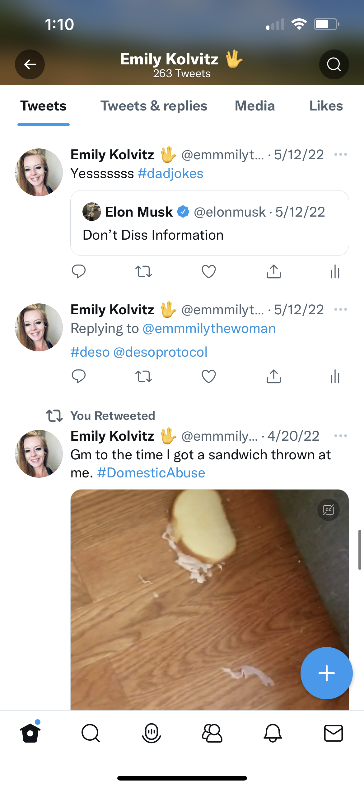

3 Years Post Abuse Relationship: TL;DR GET OUT NOW!
Sharing this information is in no way intended to collect a debt owed to me, or to seek vegence, input, or advice from outside parties. It is a factual representation of marital abuse that went unreported and untalked about for years.
In sharing it with others, I'm hopeful it may be helpful to other victims, and that they will hear this message: GET OUT NOW.
It's not normal to be told to your face by your husband "I hope you drown in the lake."
It IS normal to be told: "It's not your fault."
Dating History
September 13, 2001 - October 10, 2008
Marriage History
2009-2023
Fall of 2011
Southside Oklahoma City Rental House after moving back from Baton Rouge, Louisiana. We had a verbal argument related to him not getting a job. I barracaded myself in the bedroom to get away from him because he was throwing furniture. He body slammed himself into the door, knocking over the dresser, and knocking me onto the homemade (with sharp angle edges oak platform bed. I took photos on my phone of it to document it. I didn't tell anyone.
In a separate incident he threw our xbox controller at the television and broke the tv. We lied to my parents when they visited and said that Sophia did it on accident.
In either the same as above, or another incident, he took the car keys and threw them in the bush in front of the house, so I could not leave the property during a verbal disagreement.
The Colony, Texas. Flatiron District Apartments, 2013
Broke IPAD over my head in verbal argument. Threw scissors at me, landing in a pierced hole in the wall near my head. Daughter present, but in her bedroom I believe.
Quincy, Mass. Home Apartment 445 Willard St. 2015
Heated verbal argument yelling within arms reach. I raised my hands while talking in expressive movement, not attack movement and he physically slapped my hands upward very hard.
Queensbridge Court, North Raleigh, North Carolina 2016-2020
He broke our living room lamp from Amazon. It was a more expensive lamp than I usually would have bought, over $100. This was the first of a few lamps that got broken by him during arguments. I was tired of him throwing things while angry. During this fight I threw my antique remington rand typewritter at the ground and broke it, to my regret.
May 20, 2020 - Late Spring of 2022 Snapdragon Drive House
Broke a glass framed picture of our family in the living room smashed glass everywhere and also broke dishes and plates.
Threw a sandwich at me during this argument.

Cut up a bunch of our family photos with scissors, removing me and cutting my image up, left cut up pictures all over the ground.
Broke one of two bedside tables/furniture into small pieces in the bedroom.
Verbal disagreement morning routine. Locked me out of the house in the morning without my phone or keys while he drove off to take the kids to school.
Verbal disagreement morning of second week of October 2021
Upset I went to work on my computer (remote job) after not sleeping for a few days. Poured my coffee out and told me to go get in bed/go back to sleep. Gaslit me by saying he was staring directly at me while he had his back turned towards me. I ran away from home and was briefly a missing person, ended up in the hospital and he was in charge of my medical care, ordering an unnecessary procedure that put my health at risk, a spinal tap. I was put on psychiatric medications for schizophrenia treatment.
April 2022 Beach Key West, Florida
While parked, reached around from the driver's seat and pulled my hair and hit/pulled at my ears while trying to pull out my wireless beats headphones after a mild disagreement where I said, "I don't have to listen to you." Witnessed by his mother-in-law, her boyfriend, and my two children.
Cinnamon Drive, North Durham Summer, Post Separation, but before full divorce
Threw a custom machined metal family tree with my family's individual names carved out in it at my truck after I drove out to give him some of his stuff (an agreed visit.)
Driveway, Snapdragon, Wake Forest, North Carolina 2022
Called me bipolar/recommended I go see a doctor for that specific illness after we recently separated and were still trying to stay friends/friendly for the kids.
Safe House, 2026
It's not my fault. The truth is important. Don't lie for abusers.
In no civilized culture is this type of behavior from someone who is supposed to love, protect, and cherish you acceptable.
When I reflect on it, I think this will be a problem eliminated in the future because audio/video documentation could be scanned to recognize abusive signals using artificial intelligence. Sometimes I wish I had of had an Optimus robot in the house that captured the details of the physical abusive encounters.
If I wasn't smart enough to recognize that this pattern has almost NEVER been broken in human history (just like pedophiles never are "recovered" or "recuperated"), then I'd want someone smarter than me to bring it to my attention.